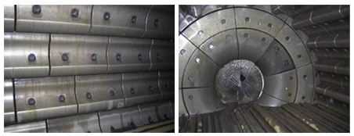
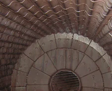
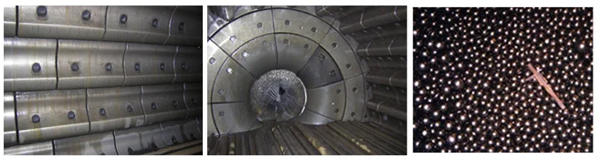

SAG/AG/шаровые
Typical Applications
Галерея производства — Цех Anranst





.webp)

SAG/AG/шаровые — Модели
| Модели | Детали |
|---|---|
| Модели | Up to 12m dia. |
| Изнашиваемые детали | Shell liners, Lifter bars, Grate plates |
| Модели | SABC (SAG Mill/Ball Mill/Crusher) |
| Модели | HV400, HV600, HV800 |
| Модели | Cr15, Cr26, Cr20 |
| Модели | Cr15, ZG45 |
| Марка материала | ZG45 |
| Модели | PAGE 11, PAGE 10, MEFI5771 |
| Модели | DOI 10, PM 130, UDC 622 |
Детали
Изготовлено из премиальных износостойких сплавов: высокомарганцевая сталь, Cr-Mo сплав, высокохромистый чугун.
SAG/AG/шаровые Детали
Модели
Up to 12m dia.
Детали
Обечайки, лифтеры, решётки
Футеровка обечайки
Защищает обечайку SAG-мельницы; CITIC производит мельницы до 12,2м
| Grade | C | Si | Mn | Cr | Mo | Ni |
|---|---|---|---|---|---|---|
| Cr-Mo Alloy Steel | 0.15-0.25 | 0.30-0.60 | 0.50-0.80 | 1.00-1.50 | 0.45-0.65 | — |
Хорошее сочетание твёрдости и вязкости; для футеровки SAG-мельниц и решёток
| Grade | C | Si | Mn | Cr | Mo | Ni |
|---|---|---|---|---|---|---|
| Cr26 | 2.0-3.3 | ≤1.0 | 0.5-1.5 | 23.0-30.0 | 1.0-3.0 | ≤1.5 |
Сетка карбидов M7C3 обеспечивает превосходную износостойкость; срок службы в 3-5 раз дольше марганцевой стали
Решётка
Контролирует размер разгрузки SAG CITIC; гальковые порты
| Grade | C | Si | Mn | Cr | Mo | Ni |
|---|---|---|---|---|---|---|
| Cr26 | 2.0-3.3 | ≤1.0 | 0.5-1.5 | 23.0-30.0 | 1.0-3.0 | ≤1.5 |
Сетка карбидов M7C3 обеспечивает превосходную износостойкость; срок службы в 3-5 раз дольше марганцевой стали
Решётка
Разгрузочные решётки SAG CITIC; Cr26 для максимальной износостойкости
| Grade | C | Si | Mn | Cr | Mo |
|---|---|---|---|---|---|
| Cr20 | 2.0-3.3 | ≤1.2 | ≤1.5 | 18.0-23.0 | ≤3.0 |
Высокая твёрдость с умеренной вязкостью; била и молоты
| Grade | C | Si | Mn | Cr | Mo |
|---|---|---|---|---|---|
| Cr26 | 2.0-3.3 | ≤1.2 | ≤1.5 | 23.0-30.0 | ≤2.0 |
Максимальная твёрдость для абразивного износа; мелкое дробление и помол
Почему Anranst
- Футеровка Cr-Mo для SAG CITIC до 40'; без трещин благодаря контролю карбидов
- Cr26 решётки; на 15-20% дольше Cr20
- Полное покрытие CITIC SAG: 6,7-12,2м